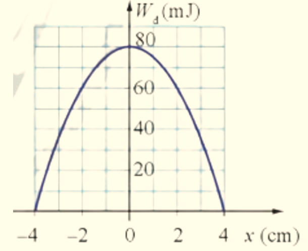
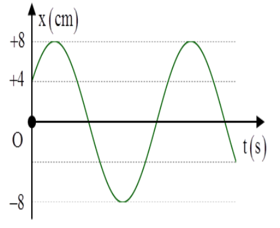
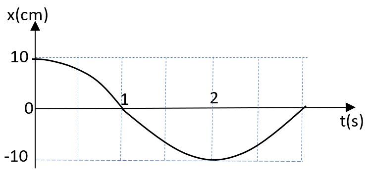
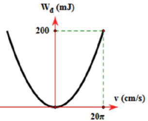
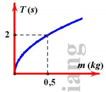

📋 Quy định làm bài
- Thời gian: 45 phút. Còn 10 phút hệ thống nhắc; hết giờ có thêm 5 phút gia hạn rồi tự động nộp.
- Bài làm ở chế độ toàn màn hình. Chuyển tab, mất focus, thoát toàn màn hình đều bị ghi nhận và báo cho giáo viên.
- Không dùng chuột phải, sao chép/dán, phím tắt. Trợ lý AI chỉ mở sau khi nộp bài. Phần tự luận: AI gợi ý điểm, giáo viên duyệt điểm chính thức.
PHẦN I. Câu trắc nghiệm nhiều phương án lựa chọn
Mỗi câu có 4 phương án, chỉ chọn một đáp án đúng (0,25 điểm).
1
Một chất điểm dao động điều hòa với phương trình $x = 10\cos 2\pi t$ (cm). Li độ của chất điểm ở thời điểm t = 1 s là
2
Biểu thức tính cơ năng W của một vật có khối lượng m dao động điều hòa với tần số góc $\omega$ và biên độ A là
3
Một chất điểm dao động điều hòa với phương trình $x = 6\cos(10t - \pi/2)$ cm. Tốc độ của chất điểm này khi qua vị trí cân bằng là
4
Một chất điểm dao động điều hòa với tần số 2 Hz. Chu kỳ dao động của chất điểm là
5

Cho một vật dao động điều hòa có đồ thị biểu diễn động năng theo li độ như hình vẽ. Cơ năng dao động của vật là6
Khi nói về dao động cơ cưỡng bức, phát biểu nào sau đây là sai?
7
Vận tốc của chất điểm dao động điều hòa có độ lớn cực đại khi chất điểm có
8
Độ lớn độ lệch pha giữa li độ và vận tốc trong dao động điều hòa là
9
Một chất điểm dao động điều hòa với phương trình $x = 10\cos\pi t$ (cm). Chu kỳ dao động của chất điểm là
10
Dao động tắt dần là dao động có
11
Pha ban đầu của dao động điều hòa có đơn vị là
12
Một chất điểm dao động điều hòa, trong thời gian một phút vật thực hiện được 60 dao động. Tần số dao động của chất điểm là
13

Một vật có khối lượng 50 g, dao động điều hòa với tần số góc 3 rad/s và có đồ thị li độ theo thời gian như hình vẽ. Cơ năng dao động của vật là14
Dao động điều hoà có phương trình dao động $x=A\cos(\omega t+\varphi)$, gia tốc biến thiên điều hoà theo phương trình
15
Một vật dao động điều hoà theo phương trình $x = 6\cos(10t - \pi/2)$ cm. Biên độ dao động của vật là
16
Một con lắc lò xo gồm vật có khối lượng m treo vào một lò xo nhẹ có độ cứng 100 N/m dao động điều hoà với biên độ 10 cm. Cơ năng dao động của vật là
17

Một chất điểm dao động điều hòa có đồ thị biểu diễn sự phụ thuộc của li độ x theo thời gian t như hình bên. Nửa chu kì dao động của chất điểm bằng18
Một con lắc đơn gồm vật nhỏ có khối lượng m treo vào sợi dây có chiều dài 1 m thực hiện dao động điều hoà, lấy $g = \pi^{2}$ m/s$^2$. Chu kỳ dao động của con lắc là
PHẦN II. Câu trắc nghiệm đúng sai
Trong mỗi ý a), b), c), d) chọn Đúng hoặc Sai. Đúng 1 ý: 0,1 · 2 ý: 0,25 · 3 ý: 0,5 · 4 ý: 1,0 điểm.
1
Một con lắc lò xo dao động điều hòa với biên độ 10 cm. Đồ thị biểu diễn mối liên hệ giữa động năng và vận tốc của vật dao động được cho như hình vẽ.

a) Vận tốc cực đại của vật là 200 cm/s.
b) Chu kỳ dao động của con lắc là 1 s.
c) Độ cứng của lò xo là 40 N/m.
d) Li độ của vật khi vật có động năng gấp 2 lần thế năng là 5 cm.
2
Một chất điểm dao động điều hòa với phương trình $x = 10\cos(2\pi t + \pi/2)$ cm.
a) Chiều dài quỹ đạo của vật là 5 cm.
b) Tần số góc của dao động là $2\pi$ rad/s.
c) Pha ban đầu của dao động là $2\pi$.
d) Lúc t = 0 vật đi qua vị trí cân bằng theo chiều âm.
3
Một chất điểm dao động điều hòa và đi được quãng đường 20 cm trong một chu kỳ với tần số 1 Hz.
a) Biên độ dao động của chất điểm là 5 cm.
b) Chu kì dao động của chất điểm là 2 s.
c) Tốc độ của chất điểm khi qua vị trí cân bằng là $10\pi$ (cm/s).
d) Gia tốc của chất điểm khi đi qua vị trí cân bằng là 0.
PHẦN III. Câu trắc nghiệm trả lời ngắn
Điền đáp số (có thể dùng dấu phẩy hoặc dấu chấm thập phân). Mỗi câu 0,25 điểm.
1
Một con lắc đơn gồm một sợi dây dài 1 m dao động điều hoà tại nơi có gia tốc trọng trường $g = \pi^{2} = 10$ m/s$^2$. Tần số dao động của con lắc là bao nhiêu Hz? (Kết quả được lấy đến sau dấu phẩy 1 chữ số).
Hz
2
Một chất điểm dao động điều hòa có tốc độ cực đại là 20 cm/s, gia tốc cực đại là 80 cm/s$^2$. Tốc độ góc của chất điểm là bao nhiêu rad/s? (Kết quả được lấy đến phần nguyên).
rad/s
3
Khảo sát chu kỳ T theo khối lượng của con lắc lò xo ta thu được đồ thị như hình vẽ. Lấy $\pi^{2} = 10$. Độ cứng của lò xo là bao nhiêu N/m? (Kết quả được lấy đến phần nguyên).

N/m
4
Một người xách một xô nước đi trên đường, mỗi bước đi dài 50 cm thì nước trong xô bị sóng sánh mạnh nhất. Chu kỳ dao động riêng của nước trong xô là 1 s. Tốc độ đi của người là bao nhiêu cm/s? (Kết quả được lấy đến phần nguyên).
cm/s
5
Một chất điểm dao động điều hòa trên trục Ox có phương trình  Chiều dài quỹ đạo của chất điểm là bao nhiêu cm? (Kết quả được lấy đến phần nguyên).
Chiều dài quỹ đạo của chất điểm là bao nhiêu cm? (Kết quả được lấy đến phần nguyên).
Chiều dài quỹ đạo của chất điểm là bao nhiêu cm? (Kết quả được lấy đến phần nguyên). cm
6
Một con lắc lò xo dao động điều hoà. Khi tăng khối lượng của vật lên 4 lần thì chu kỳ dao động của vật sẽ tăng lên mấy lần? (Kết quả được lấy đến phần nguyên).